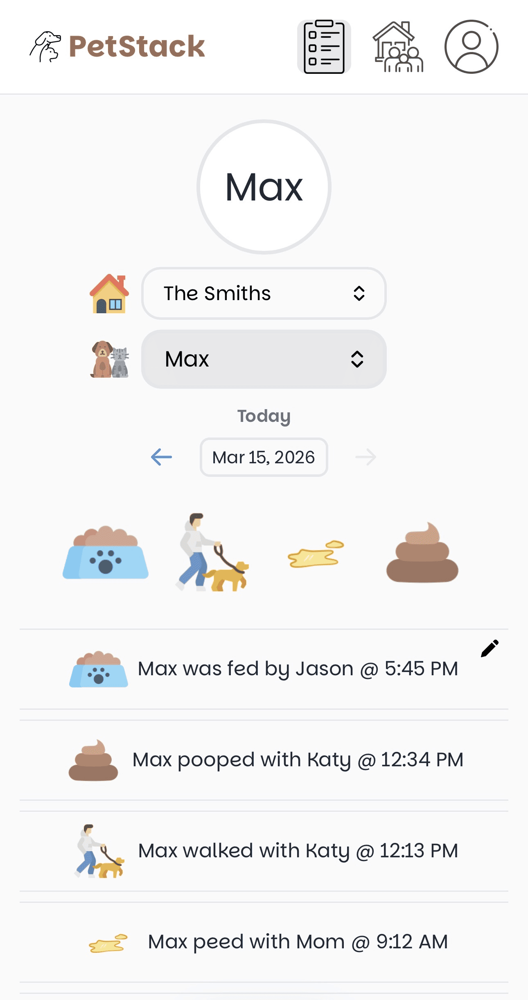

The easiest platform for keeping up with your pet
Log pet activities in real time with family and friends, making collaborative pet care simple and seamless.
Learn moreLog pet activities in real time with family and friends, making collaborative pet care simple and seamless.
Learn moreIf you share responsibility for a pet with family, roommates, or a partner, you know how easy it is to forget who's done what.
PetStack is a mobile-focused web application that helps groups keep track of their pet's daily care through a shared, real-time activity log.
In a busy household, questions like "Did someone feed the dog?" or "Did anyone take them out before bed?" come up almost every day.
PetStack solves that by giving everyone a simple place to log activities and quickly see what's been done — something anyone in the household can pick up and use right away.

Setup is simple. Create an account, log in, and you'll be prompted to either create a household or join one. A household is a shared space for everyone involved in your pet's care to stay on the same page.
Once you've created or joined a household using an invite code, you can add a pet and start logging activities right away.
Not currently! PetStack is a solo-developed project, so starting with a web app was the best way to get it up and running. Since different devices use different programming languages, releasing native apps on app stores would take quite a bit more development time.
The good news is that most devices let you add a website to your home screen. If you do that with PetStack, it'll behave almost like a regular app.